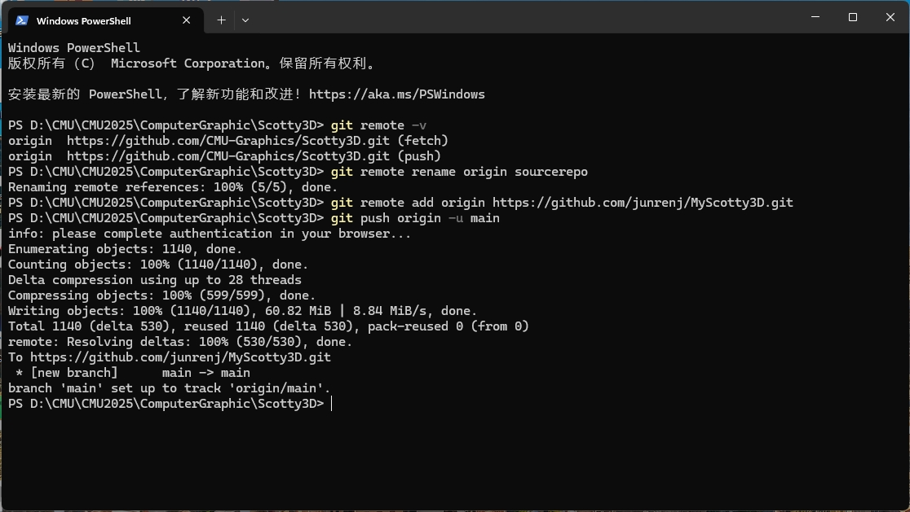
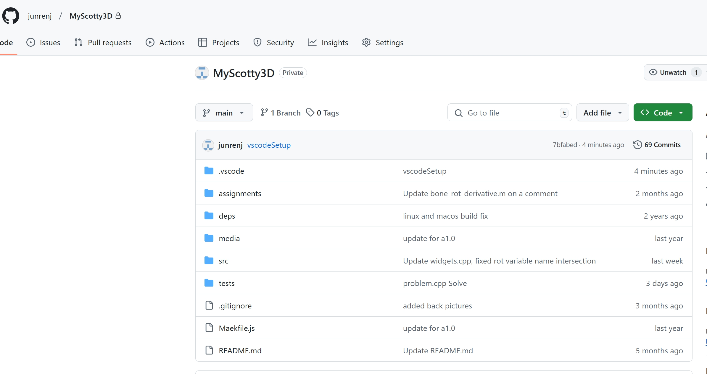
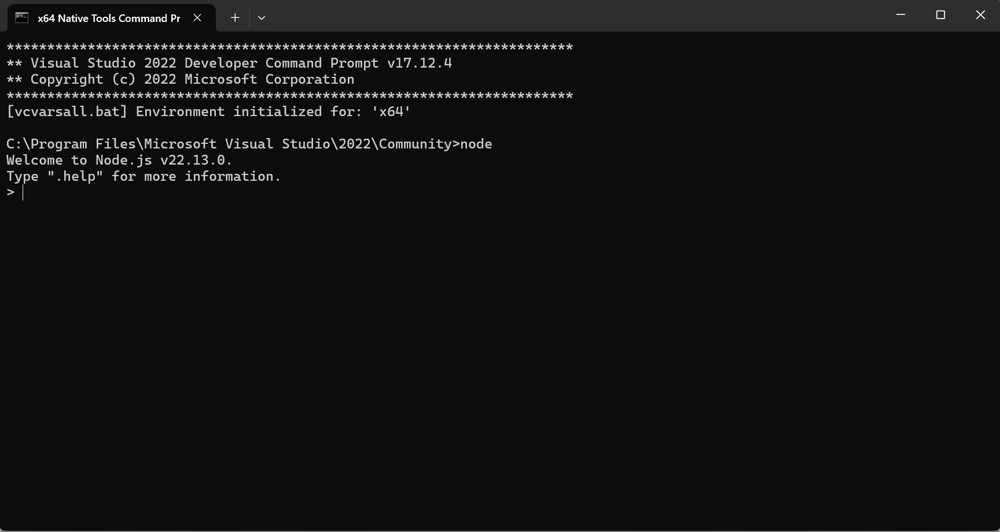
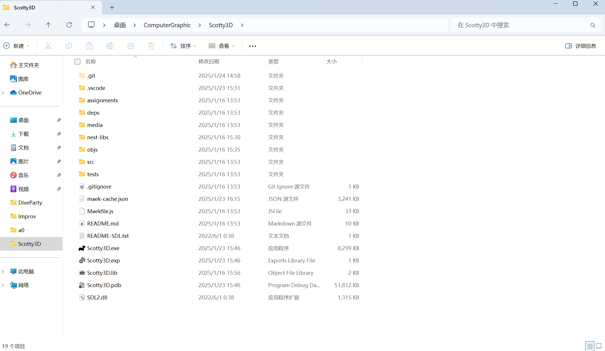
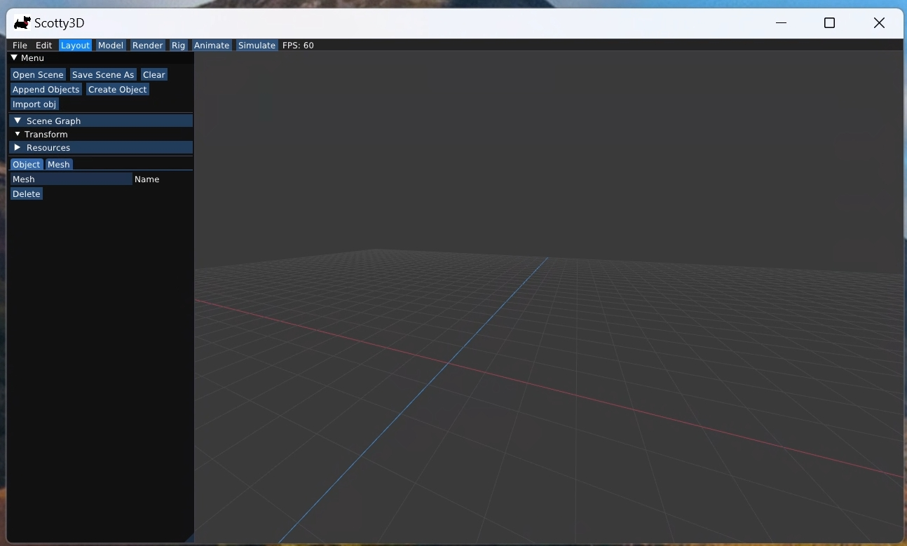
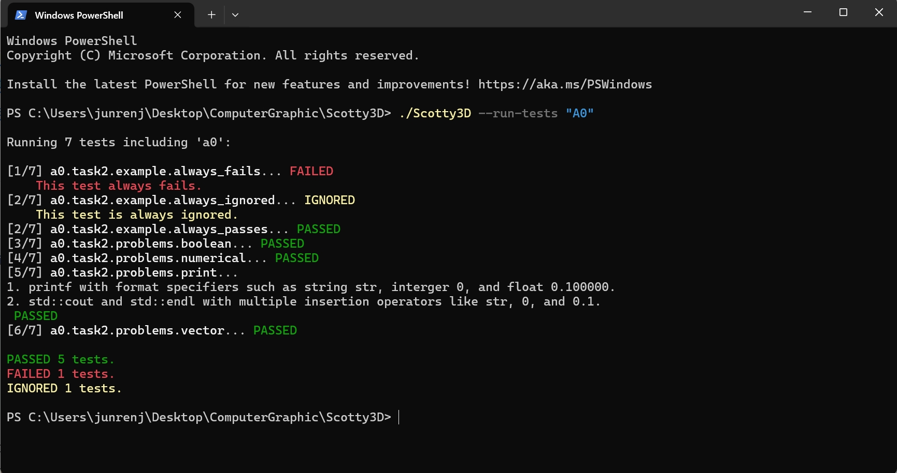

**Assignment 0 Report**
AndrewID: junrenj
(##) About this template
* You can view your writeup by opening it in a browser - right click this file and open with your browser of choice.
* Replace reference images with your own screenshots or renders when applicable.
* Include descriptions of any encountered problems and the time you spent on each task.
(##) A0T1
Step 1: Clone(10min)

or

Step 2: General Setup(15min)
Visual Studio:
Node:

Nest-libs:

Step 3: Build and Run(>2 hour)


(##) A0T2(5min + 10min + 5min + 10min)
Your completion of this task will be graded based on your `test.a0.task2.problems.cpp` file and your responses to the below questions.
For each of the problems you solved in task 2, characterise the bug in your own words and explain one other scenario that may cause this
type of bug.
Problem 1: 1.The correct spelling is not "cour" but should be "cout."
2.When using cout<<, you cannot use "+" for string concatenation.
3.The printf line of code is missing a semicolon at the end.
Problem 2: C++ will convert type of values during the calculation. Both y and factor are int. Their quotient will be int, causing the decimal part of the result to be discarded, which leads to an inaccurate final result.
Problem 3: In C++, std::vector::end() does not point to the last element of the vector, but rather to the memory unit just after the last element. This unit does not store any data. Also it exceeded the range. So if we try to use * to get the value inside it, it would cause an error.Therefore, to access the last element of a std::vector, we should use vector.end() - 1.
Problem 4: The == operator returns a boolean value, and in C++, a boolean value is represented as 0 (false) or 1 (true). So vec1.at(i) == vec2.at(j)) == vec3.at(k) means valueA(bool) ==valueB(int). At this point, C++ will automatically convert the bool value to an int value, which means the whole code is to compare the value of vec3.at(k) with 1 or 0. So count only would be added when vec3.at(k) equals 0, which also means it’s the condition when vec1.at(i) unequals vec2.at(j)).
(##) A0T3(60min)
You do not need any screenshots for this task. Your completion will be graded based on your `src` submission.
(##) Feedback
Use this section to provide feedback about the assignment.